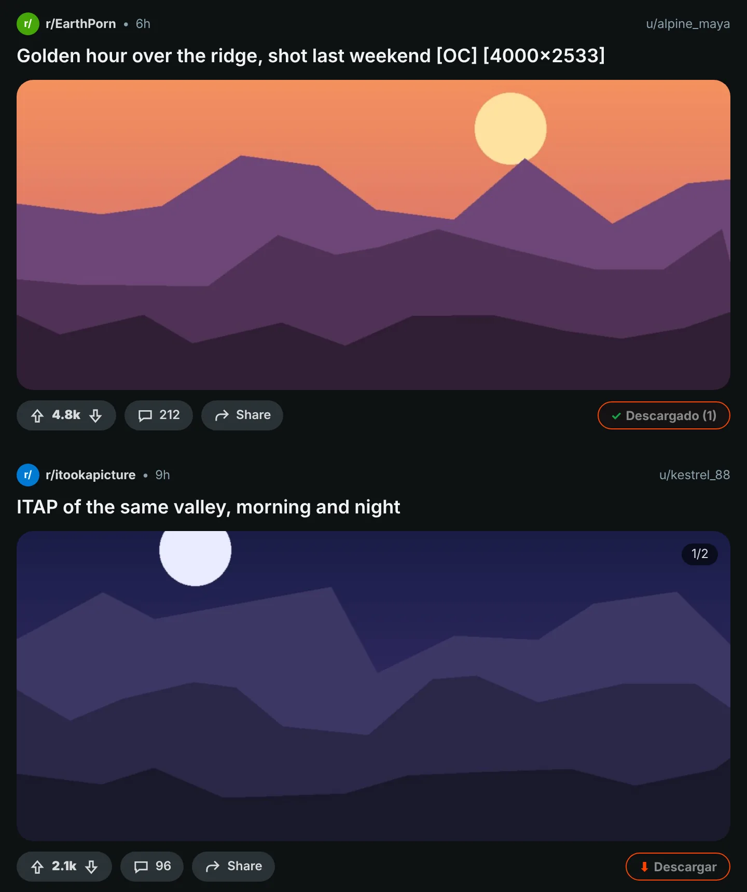
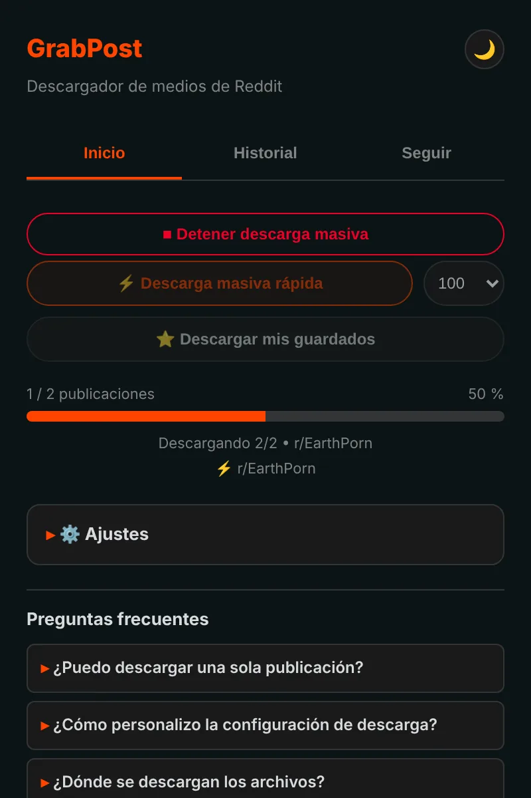
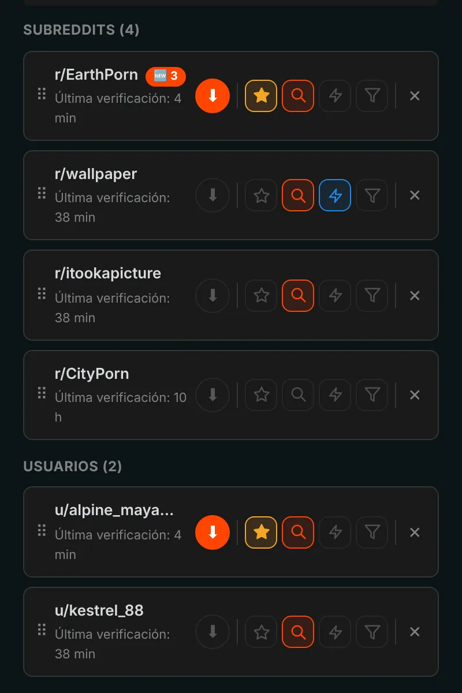
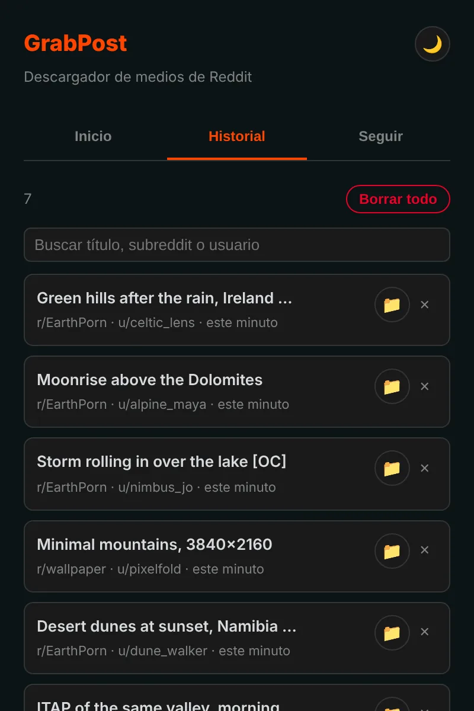

Guarda lo que quieras de Reddit con un clic.
GrabPost pone un botón Descargar en cada publicación de Reddit. Los vídeos conservan el sonido, las galerías llegan completas y subreddits o perfiles enteros se descargan mientras haces otra cosa. Gratis y sin rastreo.
Aún no está en las tiendas. Instalarlo desde GitHub lleva más o menos un minuto.

Pulsa el botón de la publicación.
Un botón en cada publicación
El botón naranja está en la fila de votos y compartir de cada publicación: en el feed, en perfiles y en resultados de búsqueda, en el Reddit nuevo y en el antiguo. Funcionan imágenes, galerías, GIF, Redgifs y enlaces de Imgur. Alt+Mayús+D descarga la publicación que está en el centro de la pantalla.

Páginas enteras de una vez
El modo rápido lee un subreddit, un perfil, un multireddit o una búsqueda directamente de los datos de Reddit, así que no hace falta desplazarse. Se salta lo que ya tienes y se detiene al llegar a publicaciones que descargaste antes. Tus publicaciones guardadas se descargan igual.

Sigue y lo nuevo te llega solo
Sigue subreddits y usuarios y recibe un aviso cuando aparezca contenido nuevo, o deja que se descargue solo. Filtra por tipo de medio, NSFW o palabras clave. Hasta 10 favoritos se pueden revisar cada 5 minutos.

Cada descarga queda registrada
El historial muestra lo que guardaste, con buscador, y las publicaciones que ya tienes se marcan en Reddit. Las copias de seguridad se hacen solas, así que reinstalar no borra tu lista.

Los detalles están cuidados
Vídeos con sonido
Reddit guarda el sonido en un archivo aparte. GrabPost lo encuentra y lo une, dentro de tu navegador.
Tus carpetas, tus nombres de archivo
Plantillas como {subreddit}/{user} para carpetas y {date}_{title} para archivos.
Sin duplicados
Reconoce la misma imagen aunque alguien la haya vuelto a subir en otro subreddit.
Funciona junto a IDM
Los gestores de descargas no pueden quedarse con el archivo y tirar tus nombres de carpeta.
Paciente con Reddit
Cuando Reddit pide una pausa, GrabPost espera justo lo que pide y continúa.
15 idiomas
La extensión y esta página hablan tu idioma.
Lo que descargas es asunto tuyo
- Sin analíticas, sin rastreo, sin cuenta
- Solo habla con Reddit y con los sitios que alojan su contenido
- Tu historial y tus ajustes se quedan en tu navegador
- Código abierto en GitHub
Instálalo en un minuto
GrabPost aún no está en Chrome Web Store, así que se instala a mano. Funciona en Chrome, Edge, Brave, Opera y otros navegadores Chromium.
- Descarga el último grabpost-v…zip desde GitHub y descomprímelo en una carpeta que vayas a conservar.
- Abre
chrome://extensionsy activa el Modo de desarrollador arriba a la derecha. - Haz clic en Cargar descomprimida y elige la carpeta grabpost descomprimida.
- Abre Reddit. El botón naranja aparece en las publicaciones y el icono de la barra abre el panel de GrabPost.
Para actualizar, sustituye los archivos en la misma carpeta y pulsa el botón de recargar de la tarjeta de GrabPost. Tus ajustes e historial se mantienen.
Firefox: la versión de la tienda de complementos está en camino. Mientras tanto, el zip de Firefox se puede cargar de forma temporal desde about:debugging.
Preguntas
¿GrabPost es gratis?
Sí, todas las funciones son gratis. Si te ahorra tiempo, puedes invitar a un café al desarrollador.
¿Dónde van los archivos?
A la carpeta de descargas de tu navegador, dentro de una subcarpeta que tú eliges. Por defecto es Reddit Downloads y los nombres de archivo empiezan por el nombre del subreddit.
¿Tengo que iniciar sesión en Reddit?
Solo para tus publicaciones guardadas y para comunidades con restricción de edad. Todo lo demás funciona sin cuenta.
¿Pierdo el historial si reinstalo?
No. Con la sincronización del navegador activada, los ajustes y la lista de seguidos vuelven solos. Además se guarda una copia de seguridad automática, y GrabPost puede reconstruir su historial desde la lista de descargas del navegador.
¿Funciona en Edge, Brave u Opera?
Sí. Cualquier navegador Chromium que pueda cargar una extensión descomprimida funciona con el zip de Chrome.
Descargar GrabPost
Aún no está en las tiendas. Instalarlo desde GitHub lleva más o menos un minuto.